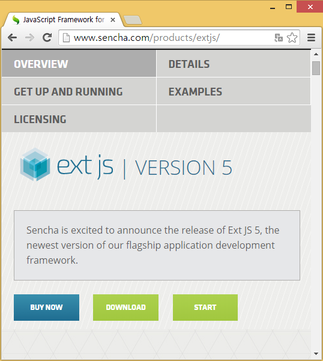
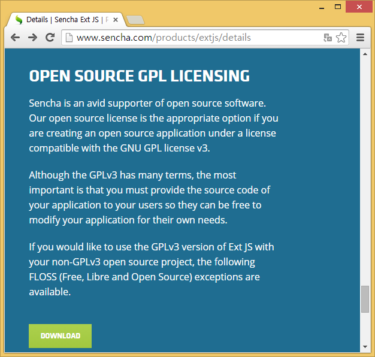
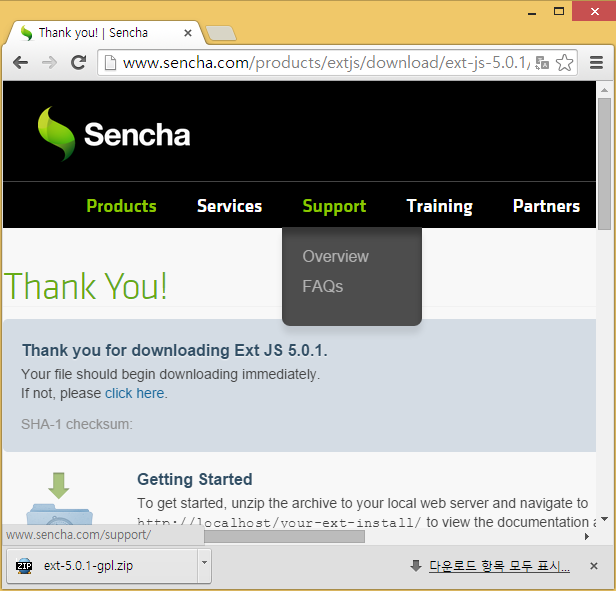
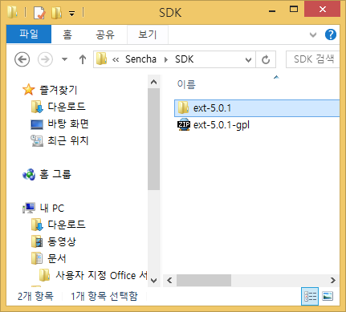
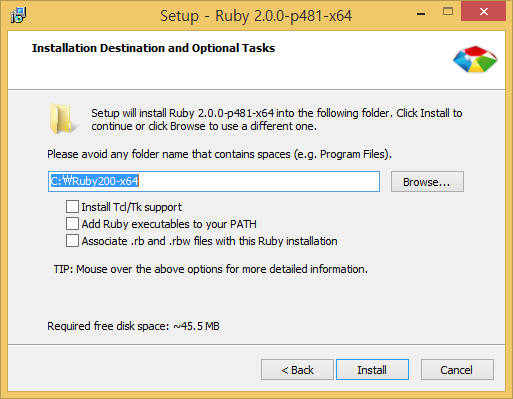
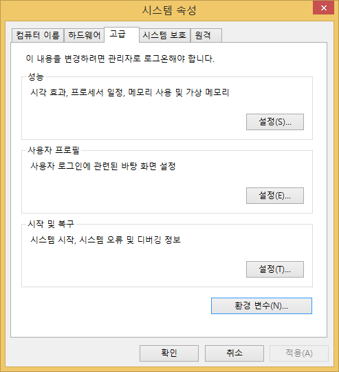
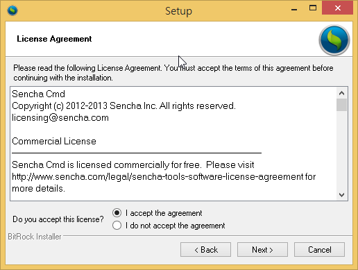
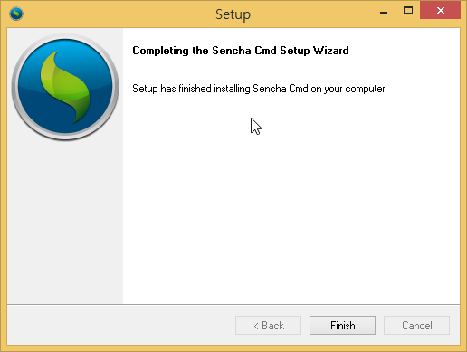
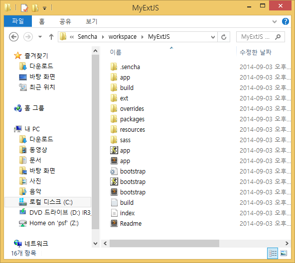
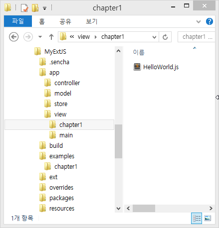

Ext JS5 Getting Start
Ext JS 버전 4가 출시된지 3년 만에 Ext JS 5가 출시됐다. B2B 분야의 웹 시스템은 B2C 분야와 달리 생산성과 유지보수 측면에서 특별한 발전을 이루지 못하고 있었다. ActiveX 등을 활용한 그리드와 멀티윈도우 솔루션이 핵심적으로 사용됐지만, 보안 및 OS종속에 대한 문제로 환영받지 못한 상태였다. 이때 Ext JS는 화려한 컴포넌트와 자신만의 클래스 시스템으로 생산성과 코드의 유지보수 측면에서 큰 이점을 주었다. Ext JS 5는 버전 4의 단점을 개선하고 MVVC, MVVM 등 최신 개념과 더 많은 종류의 차트와 새로운 컴포넌트를 추가함으로써 시스템 구축에 필요한 모든 요소를 갖추게 됐다.
설치
Ext JS는 자바스크립트이므로 텍스트 편집기와 디버깅이 가능한 브라우저만 있다면 개발환경으로 충분할지 모른다. 그러나 이러한 애기도 Ext JS5에 와서는 달라질 수 밖에 없다. 이제 Ext JS의 개발은 Sencha CMD를 기준으로 앱을 생성하고 개발, 테스트하여 배포하는 프로세스로 진행하게 될 것이다. 이를 위해 SDK라 불리는 코어라이브러리와 Sencha CMD가 빌드프로세스 처리시 테마를 구성하기 위해 필요한 루비를 설치해야한다. 설치 전 필자의 환경은 아래와 같다. * OS : 윈도우8(64비트) * Ext JS버전 : 5.0.1 * Sencha Cmd버전 : 5.0.1.231-windows
SDK 설치
SDK는 Ext JS실행에 필요한 모든 컴포넌트 클래스와 설정파일, 이미지, 샘플 등 개발에필요한 모든 요소를 압축파일로 배포하고 있다.
http://www.sencha.com에 접속하고 Products >> Sencha Ext JS 링크를 클릭하고 전용페이제에 접속하자.(그림1-1 참조)

그림 1-1 sencha.com 접속후 sdk를 다운로드한다.
해당 링크를 통해 Ext JS 5를 다운로드할 수 있는 전용로 이동하게 된다. http://www.sencha.com/products/extjs/

그림 1-2 Ext JS 전용페이지 접속.
“DETAILS”링크를 클릭하면 오픈소스GPL 버전을 다운로드 할 수 있는 페이지로 이동하게 된다.
[참고] 그림1-2에서 “DOWNLOAD” 링크를 클릭하고 이메일을 입력하면 Trial버전의 SDK를 다운로드 받을 수 있으나 실행 UI에 “Ext JS Trial”이라는 문구를 출력하게 된다. 이 책에서는 GPL버전을 사용한다.
그림1-3은 Ext JS Detail 페이지로 하단으로 스크롤하면 오픈소스 GPL버전의 SDK를 다운로드 받을 수 있다. “DOWNLOAD”링크를 클릭한다.

그림 1-3 GPL버전 다운로드.
GPL 버전의 Ext JS 5 SDK를 다운로드 한다.(그림1-4참조)

그림 1 4 Ext JS SDK다운로드
내려받은 파일의 압축을 해제해 C 드라이브의 Sencha\SDK에 옮겨 놓는다. 압축이 풀린 내부에 ext-5.0.1 폴더를 옮기면 되겠다.

그림 1-5 압축해제한 SDK폴더카피
루비 설치
루비는 Sass 파일을 컴파일하기 위한 환경을 제공한다. 이후 설치할 Sencha CMD는 빌드 과정에서 테마 또한 빌드하게 되는데 이 테마의 개발이 Sass를 통해 이뤄진다. 따라서 루비를 설치해야만 Sencha CMD를 이용한 빌드를 정상적으로 완료할 수 있다.
http://rubyinstaller.org/downloads/에 접속해 OS에 적합한 최신 Ruby 2.0.0을 내려받는다.

그림 1-6 Ruby 다운로드
다운로드한 실행파일을 실행하고 보안경고가 보이면 “실행®”을 선택한다.

그림 1-7 Ruby 설치 보안경고
Select Setup Laungage 창에서 언어를 “English”를 선택하고 “OK”버튼을 클릭한다.

그림 1-8 Ruby 설치 언어선택
라이선스에 동의하고 “Next”버튼을 클릭한다.

그림 1-9 Ruby 라이센스 동의
설치위치를 지정하고 “Install”을 클릭한다.

그림 1-10 Ruby 설치위치 지정
설치가 완료되면 “Finish” 버튼을 클릭해 설치과정을 완료한다.

그림 1-11 Ruby 설치완료
Ruby가 설치되었다면 OS내부 모든 경로에서 호출되어 실행가능하도록 클래스 패스를 지정해주어야 한다. 설치는 특이 사항이 없으나 시스템 환경변수에 루비를 추가하고 패스를 설정해야 한다. 이를 통해 Sencha Cmd 가 앱을 빌드시 ruby호출이 가능해지게 된다.
탐색기를 실행한다. “내 PC”를 선택하고 마우스오른쪽 버튼을 클릭 “속성®” 메뉴를 선택 하자

그림 1-12 탐색기를 통해 디스크창 호출
시스템 창이 보이면 “고급 시스템 설정” 링크를 클릭한다.

그림 1-13 Ruby클래스 변수를 위한 시스템 창실행
시스템 속성창이 보이면 “고급”탭을 선택하고 “환경 변수”버튼을 클릭한다.

그림 1 14 Ruby클래스 변수설정을 위한 시스템속성창
환경변수 창이 보이면 “새로 만들기” 버튼을 클릭한다. 변수 이름에 “Ruby”, 변수 값에 C:\Ruby200-x64(Ruby설치 폴더)을 입력하고 “확인” 버튼을 클릭한다.

그림 1-15 Ruby시스템 환경변수 추가
시스템 변수에 “Ruby”가 추가된 것이 확인된다.

그림 1-16 Ruby 시스템 환경변수 확인
이제 새로 생성된 Ruby변수가 “Path”변수에 추가되어 시스템 어디서든 호출 되도록 하자. 시스템 변수에서 “Path”변수를 더블클릭해 편집창을 띄운다. 변수의 마지막에 “;%Ruby%\bin”을 추가하고 “확인” 버튼을 클릭하자.

그림 1-17 Path환경변수에 Ruby변수 추가
명령프롬프트를 실행하여 Ruby가 정상 호출되는지 확인하자. 윈도우키+ R키를 실행하여 “실행”창을 띄운다. 입력필드에 “cmd”를 입력하면 “확인”을 클릭하면 명령프롬프트가 실행될 것이다.

그림 1-18 윈도우 실행창 띄우기
명령프롬프트가 실행되면 ruby –v를 입력해 Ruby의 버전이 출력되면 클래스패스가 정상적으로 적용된 것이다.

그림 1-19 Ruby 클래스 패스 확인
Sencha Cmd 설치
Sencha Cmd는 Ext JS 개발에 있어 없어서는 안 될 프로그램으로 성장했다. 이 프로그램은 Sencha Class시스템 기반의 앱을 생성하고 테스트, 빌드하며, 내장 웹 서버를 통해 앱을 직접 실행 할 수 있게 지원한다. http://www.sencha.com/products/sencha-cmd/download에 접속해 적절한 버전의 Sencha CMD를 내려받고 설치한다. 이 글을 쓰는 시점에서 최신 버전은 5.0.1 버전이다.

*그림 1-20 Sencha Cmd 다운로드 *
다운로드한 파일을 더블클릭 해 실행한다.

그림 1-21 Sencha Cmd실행파일
실행시 그림과 같은 에러를 보인다면 적합한 버전의 Java Jre가 설치되지 않은것으로 1.1.4 Java JRE설치 과정을 참고하도록 하자.

그림 1-22 Java 설치에러
Java Jre가 정상 설치되었다면 그림 1-23과 같이 설치 화면이 보일 것이다. “Next” 버튼을 클릭한다.

그림 1-23 Sencha Cmd Setup페이지
라이선스 동의 화면에서 “I accept the agreement”에 체크하고 “Next” 버튼을 클릭한다.

그림 1-24 Sencha Cmd라이센스 동의 화면
이후 설치할 위치를 지정하고 “Next” 버튼을 클릭 하고 설치를 완료하자.

그림 1-25 Sencha Cmd설치완료 화면
Ext JS를 위한 설치 작업을 완료했다. 명령프롬프트를 실행하고 Sencha Cmd가 정상적으로 작동하는지 확인해 보자. 그림 1-26 처럼 “sencha”명령 실행시 관련정보가 출력된다면 정상적으로 설치된 것이다.

그림 1-26 Sencha Cmd설치 확인
Java JRE설치
Sencha Cmd설치를 위해서는 최소 Java1.6 이상의 Jre가 설치되어야 한다. 이전 장에서 그림 1-22 Java설치 에러를 확인했다면 아래 과정을 통해 PC에 Java Jre를 설치해야 한다. https://java.com/ko/download 페이지에 접속하고 Jre을 다운로드 받자.

그림 1-27 Java Jre다운로드
다운로드된 설치파일을 더블클릭하여 실행하자. 그림 1-28이 확인된다면 “예(Y)”를 클릭한다.

그림 1-28 사용자 계정 컨트롤 확인
Java 설치 시작(그림 1-29)화면이 보이면 “설치” 버튼을 클릭한다.

그림 1-29 Java 설치 시작
설치과정이 진행된 후 Java설치 완료 화면이 확인되면 설치가 완료된 것이다.

그림 1-30 Java 설치 완료
Ext JS 시작하기
개발을 위한 환경설정이 끝났다면 앞으로 배울 내용을 정리할 수 있게 예제 앱을 생성할 것이다. C:\Sencha폴더에 workspace폴더를 생성하여 예제용 앱이 위치할 수 있도록 하겠다. 명령프롬프트를 실행하고 C:\Sencha\workspace로 이동해 예제용 앱을 생성하는 코드를 실행한다.
cd c:\Sencha\workspace sencha -sdk C:\Sencha\SDK\ext-5.0.0 generate app ext5 MyExtJS
-sdk : SDK폴더의 위치
- generate app : 앱생성 Sencha Cmd명령
- ext5 : 생성된 앱 이름이고 클래스 Namespace 맨앞을 결정한다(ext5.view.Main..)
- MyExtJS : workspace폴더 내부에서 앱이 위치할 폴더명이다.

그림 1-32 Sencha Cmd 앱 생성
탐색기를 열고 앱이 생성된 것을 확인하자.

그림 1-33 Sencha Cmd로 생성한 앱을 탐색기를 통해 확인한다.
앱 폴더 내부 파일에 대해 간단하게 알아보고 넘어가자.
- .sencha : 앱 관련 설정파일을 내장하고 있다. 빌드 및 개발에 관련된 세부속성을 변경시 관련 파일을 수정할 수 있다.
- app : 앱에서 실행되는 모든 클래스가 위치한다. 내부에 MVC에 해당하는 각 폴더를 내장하고 있다.
- build : 앱이 빌드될 경우 해당 파일들이 위치한다. 빌드는 production, development, testing 3가지로 구분되어 진다.
- ext : 앱 생성시 참조한 –sdk 패스에서 관련 파일만 추출하여 카피하여 앱이 실행될 수 있도록 한다.
- override : 기존 클래스를 변경하지 않고 override하여 변경된 내용으로 작동할 수 있는 클래스 코드를 추가한다.
- packages : 별도 테마나 패키지가 위치한다.
- resources : 관련 이미지 등 리소드 파일이 위치한다.
- sass : 테마 또는 사용자 스타일을 적용하기 위한 scss파일이 위치한다.
- app.js : 앱의 인트로 클래스다. 이 클래스에 의해 클래스가 실행될 수 있는 앱형태를 띄게 된다.
- app.json : 앱 설정파일이다. 테마변경, 외부 패스설정, 로케일, 다중테마, 차트 등이 사용될 수 있도록 설정한다.
- bootstrap.css : 앱에 연결된 테마파일의 링크가 존재한다. 이 파일은 sencha app watch명령으로 개발시 build폴더 내부 development를 참조하고, sencha app build명령 이후에는 production폴더를 참조하는 것으로 변경된다.
- bootstrap.js : 앱이 실행될 때 사용되는 index.html파일에서 앱을 로딩하기 위해 이 파일을 로딩한다. 이 파일은 앱실행에 관련된 모든 파일을 로딩하게 도와준다.
- bootstrap.json : Sencha Cmd에 의해 생성되고 계속 변경된다. sencha app build 또는 sencha app watch 명령에 의해 새로 추가된 클래스 또는 필요한 모든 파일정보를 기록한다. 이 파일은 bootstrap.js에 의해 호출되므로 사용자가 수정하지 않는다.
- build.xml : Apache Ant를 이용해 빌드프로세스를 변경할 경우 사용한다.
- index.html : 앱이 최종 실행을 위해 필요한 파일이다. app.json 내부에서 이 파일의 위치 및 이름 변경이 가능하다.
생성된 앱의 파일구조를 알아보았으니 Sencha Cmd에 내장된 jetty 웹서버를 통해 앱을 실행 확인한다. 명령 프롬프트를 실행 생성된 앱 폴더로 이동하고 웹서버 실행명령을 수행한다.
cd c:\Sencha\workspace\MyExtJS sencha web start

그림 1-34 Sencha Cmd 내부 jetty웹서버를 실행한다.
[참고] sencha web start는 1841포트를 통해 실행된다. 포트를 변경한다면 sencha fs web -port 8000 start 와 같이 원하는 포트를 명시하며 실행할 수 있다.
브라우저를 실행하여 생성된 앱을 확인하자. 웹서버의 기본 포트는 1841이다. Sencha Cmd에 의해 만들어진 기본 앱이 실행 될 것이다.

그림 1-35 Sencha Cmd에 의해 생성된 앱을 확인한다.
예제코드 구현
이번에는 예제를 위한 코드에 대해 알아보겠다. 각 샘플은 app폴더 내부에 클래스 파일로 추가된다. 이 클래스 파일은 장별 HTML 파일에서 호출되어 실행될 것이며, HTML 파일의 위치는 앱폴더 내부 examples 폴더를 생성하고 그 아래에 장별 폴더를 생성해 브라우저에서 실행되도록 할 것이다.
그림 1 36 예제코드를 위한 준비 모든 예제는 기본적으로 동일한 내용의 HTML을 사용한다. 다른 부분이 있다면 따로 설명을 추가한다. 각 HTML파일명은 각 챕터별로 제시하겠다. examples 폴더 아래에 chapter1 폴더를 생성하자. 1_HellowWorld.html 파일을 생성해 브라우저를 통해 실행할 코드를 작성한다.
<!DOCTYPE HTML>
<html>
<head>
<meta charset="UTF-8">
<title>SAT</title>
<link rel="stylesheet" type="text/css"
href="/ext/packages/ext-theme-gray/build/resources/ext-theme-gray-all-debug.css"> <!--// Ext Js 테마스타일 파일 // -->
<script type="text/javascript" src="/ext/ext-all-debug.js"></script><!--// Ext Js 코어 라이브러리 // -->
</head>
<body>
<script type="text/javascript">
Ext.Loader.setConfig({
enabled: true,
paths: {
'ext5': '/app' // #1
}
});
Ext.require([
'ext5.view.chapter1.HelloWorld' // #2
]);
Ext.onReady(function () { // #3
Ext.create('ext5.view.chapter1.HelloWorld', { // #4
renderTo: document.body, // #5
width: ‘100%’, // #6
height: 150, // #7
bodyPadding: 5
});
})
</script>
</body>
</html>ExtJS를 실행하려면
영역에서 테마 파일(ext-theme-gray-all-debug.css)과 코어라이브러리(ext-all-debug.js)를 로딩해야 한다. 이 두개의 파일은 독립적인 HTML파일로 Ext JS 애플리케이션을 실행시 사용된다.- #1. 예제 코드의 실행은 각 HTML을 통해 이뤄지고 HTML에서 사용되는 클래스는 생성된 ext5라는 앱에 패키지 형태로 존재한다. 각 HTML에서는 이 앱을 인식하기 위한 코드가 필요하다. 이 코드는 ext5라는 앱의 클래스가 app 폴더에 있음을 알려준다.
- #2. 예제를 실행하는 데 필요한 클래스를 동적 로딩한다. 동적 로딩은 이후 배울 예정이므로 여기서는 관련 클래스를 명시한다고 생각하자.
- #3. Ext.onReady는 ExtJS가 실행될 수 있는 코드 영역을 의미하며 이는 브라우저에서 로딩할 때 자바스크립트가 실행될 수 있는 타이밍을 체크하고 코드가 안전하게 실행될 수 있게 도와준다.
- #4. 실습을 위해 작성한 클래스를 인스턴스화 한다.
- #5. 인스턴스가 생성되면 브라우저에 렌더링한다.
- #6.#7. 작성된 UI클래스의 크기(너비와 높이)를 부여한다.
이제 HTML에서 호출하는 ExtJS 클래스 파일을 작성하자. 클래스 파일은 app 폴더 아래 4개의 폴더(model, store, view, controller)에 분류하여 저장하겠다.
그림1-37은 chapter1의 HelloWorld클래스이다. examples/chapter1/1_HelloWorld.html파일에서 실행될 것이다.

그림 1-37 HellowWorld 클래스는 MyExtJS/app/view/HelloWorld.js파일이다.
앞에서 작성한 HTML에서 사용할 HelloWorld.js 클래스파일을 view/chapter1 폴더에 생성하고 다음 코드를 작성한다.
Ext.define('ext5.view.chapter1.HelloWorld', { // #1
extend: 'Ext.panel.Panel', // #2
alias: 'widget.chapter1-helloworld', // #3
title: 'Hello World', // #4
html: '안녕하세요 ExtJS5를 같이 배워요!!' // #5
});- #1. Ext.define은 클래스를 정의하는 문법이다. 이후 클래스의 이름을 정의한다. 클래스명은 콤마(.)로 구분되는 마지막 단어이고 패키지명을 다시 콤마(.)으로 구분하고 있다. 맨앞의 “ext5”는 모든 클래스에서 공통으로 사용할 앱의 이름이다. 여기에서는 view.chapter1까지가 패키지명에 해당하고 HelloWorld가 클래스명에 해당할 것이다.
- #2. 대부분의 클래스는 상속을 이용해 확장한다. 확장할 클래스의 전체 이름이다. 이클래스는 ‘Ext.panel.Panel’ 클래스를 확장한다.
- #3. alias는 클래스의 함축적 이름으로 컨테이너의 자식으로 추가할 때 xtype으로 사용된다
- #4#5. title과 html요소를 설정한다.
브라우저 주소창에서 http://localhost:1841/examples/chapter1/1_HellowWorld.html를 실행해 결과를 확인하자.

그림 1-38 http://localhost:1841/examples/chapter1/1_HellowWorld.html 실행 결과
이처럼 Ext JS는 UI를 표현할 css스타일과 Dom요소를 제어하는 Javascript라이브러리 만으로 작동될 수 있다.